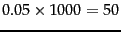

Next: Frequency-based feature selection
Up: Feature selectionChi2 Feature selection
Previous: Feature selectionChi2 Feature selection
Contents
Index
From a statistical point of view, feature selection
is problematic. For a test with one degree of freedom, the
so-called Yates correction should be used (see
Section 13.7 ), which makes it harder to reach
statistical significance. Also, whenever a statistical test
is used multiple times, then the probability of getting at
least one error increases. If 1,000 hypotheses are rejected,
each with 0.05 error probability, then
 calls of the test will be
wrong on average. However, in text classification it rarely
matters whether a few additional terms are added to the
feature set or removed from it. Rather, the relative
importance of features is important.
As long as feature selection
only ranks features with respect to their usefulness and is
not used to make statements about statistical dependence or
independence of variables, we need not be overly concerned
that it does not adhere strictly to statistical theory.
Next: Frequency-based feature selection
Up: Feature selectionChi2 Feature selection
Previous: Feature selectionChi2 Feature selection
Contents
Index
© 2008 Cambridge University Press
This is an automatically generated page. In case of formatting errors you may want to look at the PDF edition of the book.
2009-04-07